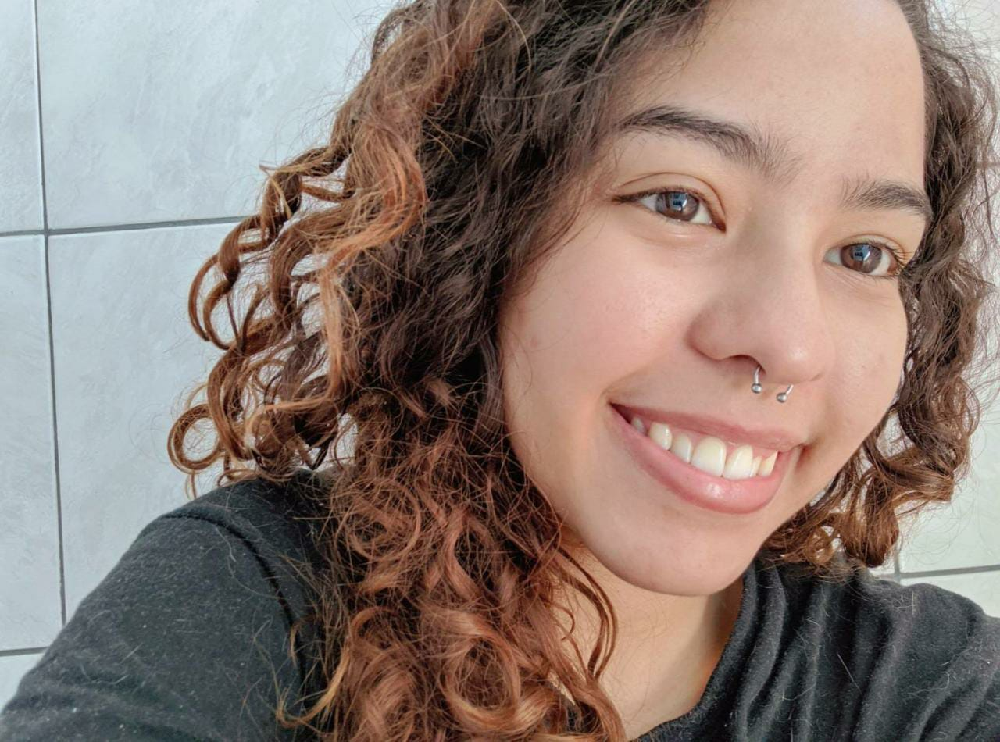

Links da página:
Nome: Juliana Pessoa de Barros Happatsch
Sou uma brasileira de 20 anos que foi nascida e criada no Rio de Janeiro. Gosto muito de aprender novas coisas, não só relacionadas à programação, mas também novas línguas, culturas e qualquer coisa relacionada à arte. Sou tímida, mas quando fico a vontade falo bastante, sou muito curiosa e gosto de sair da minha zona de conforto, mesmo sendo uma experiência um tanto assustadora em alguns momentos.